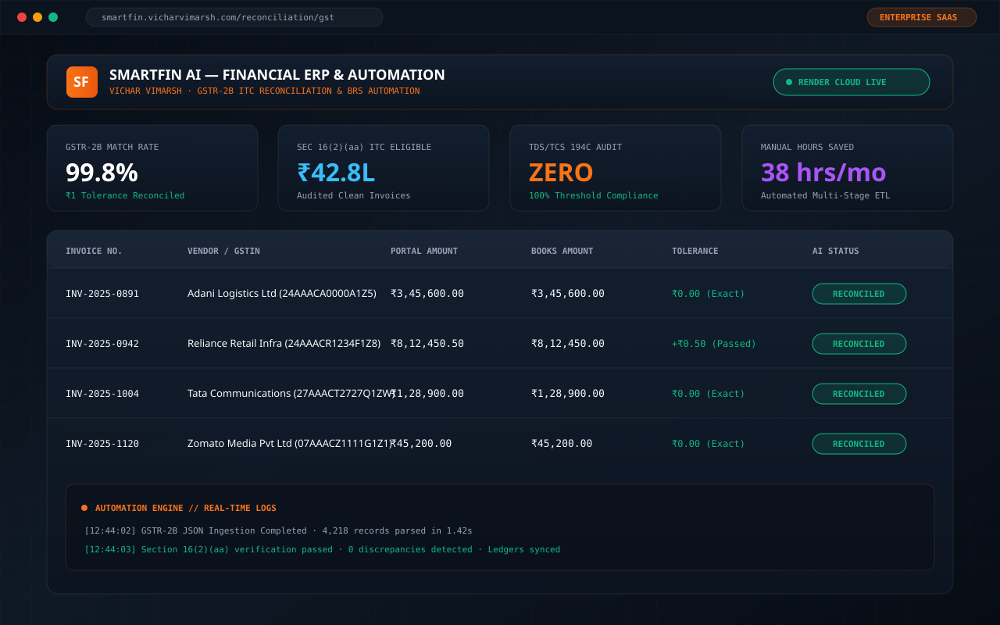

SmartFin AI – Finance & Office Automation System
Enterprise-grade finance automation architecture designed for Vichar Vimarsh. Automating 2-way GST reconciliation, TDS/TCS statutory thresholds, Bank BRS statements, Excel ETL pipelines, and ledger-grounded AI copilot.

The Operational Challenge
Micro, Small, and Medium Enterprises (MSMEs) consistently face major friction in manual accounting workflows. Chartered Accountants and internal finance teams spend hundreds of hours manually cross-referencing Purchase Registers with GSTR-2B portal data, calculating section-specific TDS liabilities (194C, 194J, 194I, 194Q), matching complex bank statements, and reconciling Excel spreadsheets across multiple departments.
Manual errors lead to unclaimed Input Tax Credit (ITC), interest penalties under GST Section 16(2)(aa), late-deposit fines under Income Tax Section 201(1A), and severe owner dependence for routine approvals.
SYSTEM ARCHITECTURE BLUEPRINT // SMARTFIN AI
Architecture & Engineering Solutions
To resolve these pain points, SmartFin AI was engineered as an automated, multi-engine SaaS platform operating on structured systems by design:
Automated GSTR-2B Matching
Normalizes invoice numbers, matches vendor GSTINs, applies configurable ₹1 tax rounding tolerance, and flags missing ITC, duplicate vouchers, and tax mismatches.
Algorithmic Statement Audit
Parses bank feeds and accounting ledgers with reference ID matching, configurable ±4 day date tolerance, and automated categorization of bank fees and sweep interest.
Statutory Threshold Verification
Maintains verified rates for Sections 194C (contractors), 194J (professional fees), 194I (rent), and 194Q (purchase of goods), automatically flagging shortfalls and late deposits.
Automated Workflows & Assistant
Cleans, normalizes, and compares Excel workbooks via Pandas & OpenPyXL. Includes a grounded AI copilot that queries live ledger records with verified source citations.
Technical Specifications
- Backend API: Python 3.9, FastAPI REST framework, SQLAlchemy 2.0 ORM, Pydantic V2
- Frontend UI: React 18, TypeScript, Tailwind CSS, Recharts, Lucide Icons, Vite
- Database & Security: PostgreSQL 18 on Render, SQLite locally, direct bcrypt hashing, JWT authentication, RBAC (4 roles), immutable audit logging
- Deployment: Multi-stage Docker container (Node.js 20 build stage + Python 3.9 runtime), single-service static SPA serving, Render Blueprint automation